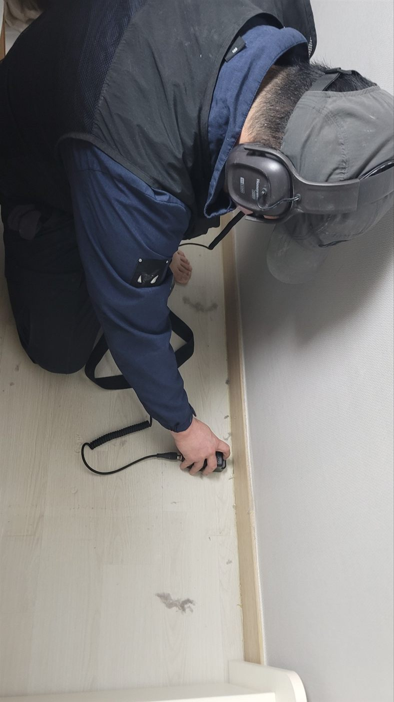
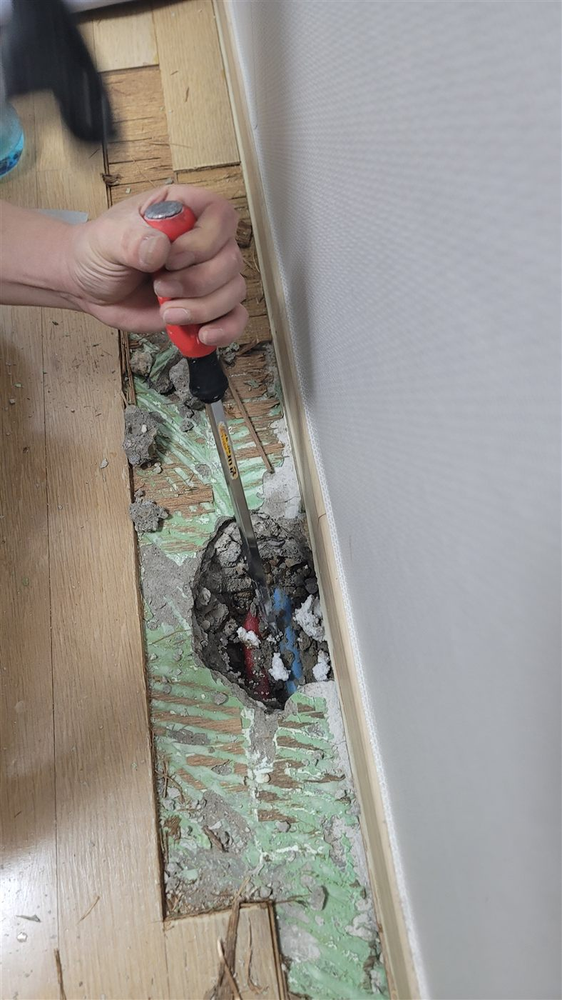
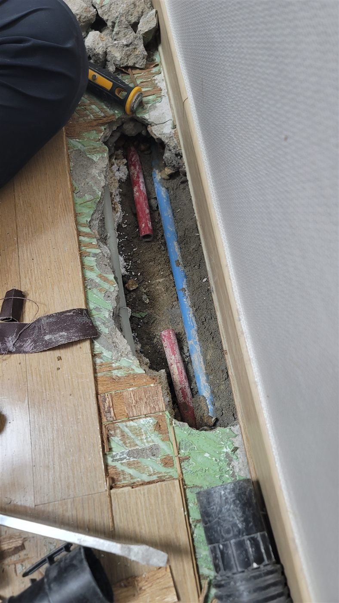
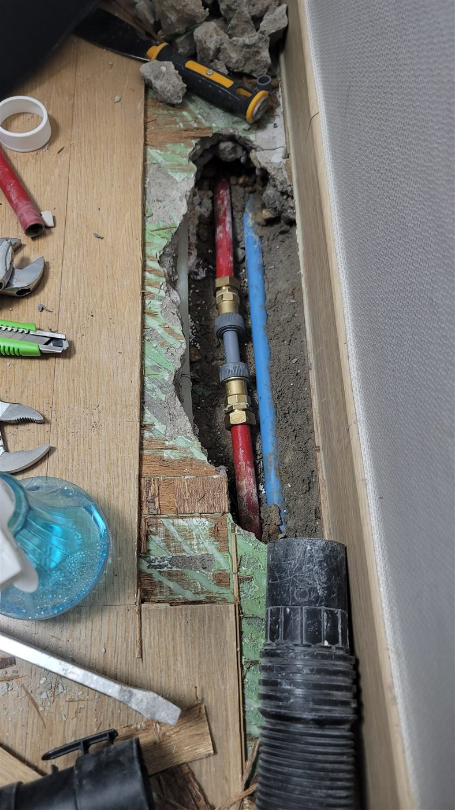

현장 상황
수도 요금이 평소보다 늘었는데 눈에 보이는 누수 흔적은 뚜렷하지 않다는 점검 요청이었습니다. 매립 배관은 물이 새도 겉으로 드러나지 않는 경우가 많아서, 바닥이나 벽을 뜯기 전에 장비로 위치부터 좁히는 순서로 진행했습니다.
청음탐지로 위치 좁히기
청음탐지는 배관에서 물이 새어 나올 때 나는 미세한 소리를 헤드폰으로 증폭해 듣는 방식입니다. 장비를 바닥 걸레받이 쪽에 대고 위치를 옮겨가며 소리가 가장 또렷한 지점을 찾았습니다.


한 지점만 듣고 결론을 내리면 오차가 생기기 쉬워서, 위치를 바꿔가며 같은 구간을 여러 번 확인했습니다. 여기에 가스검사를 더해 배관 안에 주입한 가스가 올라오는 위치를 한 번 더 대조했고, 두 결과가 겹치는 지점을 굴착 위치로 정했습니다.
굴착과 배관 확인
위치가 정해진 뒤에는 필요한 구간의 바닥 마감을 걷어내고 그 아래를 파냈습니다. 넓게 뜯지 않고 확인된 지점 주변만 열어 작업 범위를 줄였습니다.


배관 연결
노출된 배관 이음 부위를 확인하고, 문제가 있는 구간을 새 부속으로 다시 연결했습니다. 연결한 뒤에는 물이 새지 않는지 확인하고 바닥을 원래대로 정리했습니다.

청음탐지를 먼저 하는 이유
매립 배관 누수는 벽과 바닥 속에서 일어나 눈으로 확인되지 않고, 무작정 열면 멀쩡한 마감까지 뜯게 됩니다. 청음탐지는 구조물을 손상시키지 않고 위치를 좁힐 수 있고, 가스검사는 소리만으로 구분하기 어려운 미세한 누수를 보완합니다. 두 방법을 함께 쓰면 굴착 범위를 줄일 수 있습니다.
마무리
눈에 보이는 흔적이 없는 누수는 추측으로 바닥을 뜯기 시작하면 공사 범위만 커집니다. 수도 요금이 갑자기 늘었거나 벽지·바닥에 이상이 느껴지시면 장비로 위치를 먼저 확인하는 순서를 권해드립니다.
저희는 현장에서 누수 위치와 원인을 먼저 확인한 뒤 작업 범위와 비용을 안내해 드리고, 동의하신 경우에만 작업을 진행합니다. 안성·평택·천안 일대 누수 점검이 필요하시면 편하게 연락 주세요.
접수 안내
비슷한 증상으로 문의하실 곳을 찾고 계신다면 전화로 접수해 주세요. 접수 건은 확인 후 신속하게 연결해 안내해 드리며, 현장 진단 후 견적에 동의하신 뒤에만 작업이 진행됩니다.